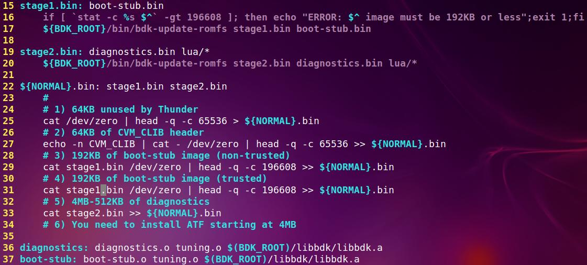

- BDK读SATA寄存器
- BDK保存文件到flash
- lua调用c函数
- fatfs
- lua trafficgen
- fat fs over spi
- 编译
- 重构后的main, normal-boot/boot-stub.c
- 2s的依赖
- 内存
- bdk有三种
- diagnostic
- csr访问, 在lua环境下
- lua
1. BDK读SATA寄存器
cavium.csr.GSERX_LANEX_SDS_PIN_MON_2(3,0).display()
2. BDK保存文件到flash
现在flash上实现了一个fatfs文件系统, 所以保存文件是可以的.
文件需要用xmodem来传, 在BDK菜单下面的文件菜单下, 使用/xmodem虚拟文件作为源,
/fatfs/xxx作为目的来拷贝就可以了.
/fatfs/default.cfg
/fatfs/lua/xxx.lua
/fatfs/stage2.bin -- BDK diag菜单
3. lua调用c函数
比如在lua里面, 可以直接调用c函数, 怎么做到的呢?
local data = cavium.c.bdk_twsix_read_ia(menu.node, twsi_bus, dev_addr, 0, 1, 0)
传统上, 如果一个C函数想被lua调用, 需要按照lua的格式来声明.
但这里, 只用一个wrapper函数, 就能达到export所有C函数的效果.
首先需要一个列表, 包括所有C函数
typedef struct
{
const char *name;
void *func;
} bdk_functions_t;
extern const bdk_functions_t bdk_functions[];
这个工作是一个python脚本完成的.
在makefile里面, 生成一个c文件包含这个函数列表
bdk-functions.c: ./create_function_table.py $(objs)
./create_function_table.py $@ $(objs)
在这个脚本里, 主要是用readelf把所有函数列出来, 然后按照bdk_functions_t的格式写到文件里.
def read_functions(elf, func_list):
file = os.popen("aarch64-thunderx-elf-readelf --wide -s %s | grep -v LOCAL | grep FUNC" % elf)
for line in file:
parts = line.split()
func = parts[-1]
if not func in func_list:
func_list.append(func)
file.close()
return func_list
all_funcs = []
for elf in sys.argv[2:]:
read_functions(elf, all_funcs)
def write_function_table(out, table_name, functions):
out.write("\n")
for f in functions:
out.write("extern void %s() __attribute__((weak));\n" % f)
out.write("\n")
out.write("const bdk_functions_t %s[] = {\n" % table_name)
for f in functions:
out.write(" {\"%s\", %s},\n" % (f, f))
out.write(" {0, 0}\n")
out.write("};\n")
out.write("\n")
out = open(sys.argv[1], "w")
write_function_table(out, "bdk_functions", bdk_funcs)
好了, 现在所有C函数(这里只取bdk_开头的)都在bdk-functions.c里面了.
对在这个table里面的每个entry, 其实就是在lua的表(table)里面, 用函数名做索引, 把函数地址作为值.
lua_pushlightuserdata(L, bdk_functions[i].func);
lua_pushcclosure(L, cavium_c_call, 1);
lua_setfield(L, -2, bdk_functions[i].name);
这里面统一注册的是一个叫cavium_c_call的函数, 下面揭开这个万能函数的真面目
static int cavium_c_call(lua_State* L)
{
//首先, 这个func最多支持8个参数
long (*func)(long arg1, long arg2, long arg3, long arg4, long arg5, long arg6, long arg7, long arg8);
long args[8];
//参数个数, 为什么getop能取出来?
int num_args = lua_gettop(L);
//函数地址
func = lua_topointer(L, lua_upvalueindex(1));
int i;
for(i=0; i<num_args; i++)
{
/* Use lua_type() instead of lua_isX() so Lua doesn't do type
conversion. I'll never understand the fascination with weakly
typed languages */
int arg_type = lua_type(L, i+1);
if (arg_type == LUA_TNUMBER)
{
args[i] = lua_tonumber(L, i+1);
}
else if (arg_type == LUA_TSTRING)
{
const char *str = lua_tostring(L, i+1);
args[i] = (long)str;
}
else if (arg_type == LUA_TNIL)
{
args[i] = 0;
}
else if (arg_type == LUA_TBOOLEAN)
{
args[i] = lua_toboolean(L, i+1);
}
else
{
luaL_error(L, "Invalid argument type");
return 0;
}
}
//返回值, 这里有点不好, 返回字符串有点麻烦
long result = func(args[0], args[1], args[2], args[3], args[4], args[5], args[6], args[7]); //这里直接传了8个参数, 因为这里func是地址
if ((func == (void*)bdk_qlm_mode_tostring) ||
(func == (void*)bdk_dram_get_test_name) ||
(func == (void*)bdk_dram_get_info_string) ||
(func == (void*)bdk_usb_get_test_mode_string) ||
(func == (void*)bdk_dram_get_config_name))
lua_pushstring(L, (const char*)result);
else
lua_pushnumber(L, result);
return 1;
}
4. fatfs
/fatfs/default.cfg
./normal-boot/Makefile: $(BDK_ROOT)/bin/fatfs-tool -q -i $(FATFS_IMG) mkfs
./normal-boot/Makefile: $(BDK_ROOT)/bin/fatfs-tool -q -i $(FATFS_IMG) cp $(STAGE1_BIN) /
./normal-boot/Makefile: $(BDK_ROOT)/bin/fatfs-tool -q -i $(FATFS_IMG) cp $(STAGE2_BIN) /
./normal-boot/Makefile: $(BDK_ROOT)/bin/fatfs-tool -q -i $(FATFS_IMG) mkdir /lua
./normal-boot/Makefile: $(BDK_ROOT)/bin/fatfs-tool -q -i $(FATFS_IMG) cp lua-common/*.lua /lua
./normal-boot/Makefile: $(BDK_ROOT)/bin/fatfs-tool -q -i $(FATFS_IMG) cp $(BOARD_ROOT)/lua/*.lua /lua
./normal-boot/Makefile: $(BDK_ROOT)/bin/fatfs-tool -q -i $(FATFS_IMG) cp $(BOARD_ROOT)/default.cfg /
./normal-boot/Makefile: $(BDK_ROOT)/bin/fatfs-tool -q -i $(FATFS_IMG) cp ./safe-mode.cfg /
5. lua trafficgen
5.1. 怎么用
local tg_pass = true
local trafficgen = require("trafficgen")
local tg = trafficgen.new()
cavium.c.bdk_wait_usec(3 * 1000000) -- wait for links to come up.
-- Do 100k packets, 60 bytes each, 50% of gigabit, timeout 5 secs
all_pass = tg_run(tg, "N0.XLAUI1", 60, 100000, 50, 5) and all_pass
-- Do 100k packets, 1499 bytes each, 50% of gigabit, timeout 7 secs
all_pass = tg_run(tg, "N0.XLAUI1", 1499, 100000, 50, 7) and all_pass
-- Do 100k packets, 9212 bytes each, 50% of gigabit, timeout 12 secs
all_pass = tg_run(tg, "N0.XLAUI1", 9212, 10000, 10, 12) and all_pass
-- Do 100k packets, 60 bytes each, 50% of gigabit, timeout 5 secs
all_pass = tg_run(tg, "N0.XFI0.0", 60, 100000, 50, 5) and all_pass
5.2. require("grafficgen")
首先, 声明一个对象, 最后就返回它.
local TrafficGen = {}
new方法:这个方法太牛了!
local known_ports = cavium.trafficgen.get_port_names()
get_port_names()实际上是C用链表实现的迭代器, 初始化时候构造链表, 用的时候遍历每个元素到lua栈里面, 从而传递给lua.
static int get_port_names(lua_State* L)
{
if (!tg_port_head)
tg_init();
int count = 0;
lua_newtable(L);
for (tg_port_t *tg_port = tg_port_head; tg_port!=NULL; tg_port = tg_port->next)
{
lua_pushinteger(L, ++count);
lua_pushstring(L, bdk_if_name(tg_port->handle));
lua_settable(L, -3);
}
return 1;
}
因为迭代器的存在, 底层C实现也就只需要实现一个迭代的bdk_if_next_port()函数接口
6. fat fs over spi
在libbdk-os/bdk-fs-fatfs.c里面, 实现了fat fs的封装fatfs_open, fatfs_read等函数是给bdk的"简单文件系统"用的. 其实现是使用libfatfs/ff.c库, 调用里面提供的f_read()
那f_read怎么知道怎么操作SPI呢? 实际上, fat fs可分为两层, 上层是文件系统, 下层是IO操作.
上层的东西一般是不变的, 变的就是IO层. IO层的驱动是disk_read, disk_write
他们利用了设备文件的读和写
total = fwrite(buff, DRV_SECTOR_SIZE(pdrv) * count, 1, DRV_FP(pdrv));
所以, 只要实现了设备文件的驱动, 就能把这个驱动代到IO层.
在fatfs_diskio_init()里面,libfatfs/diskio.c
disk_initialize()实现了其中的联系:
DRV_FP(pdrv) = fopen(DRV_DEVSTR(pdrv), "r+b");
7. 编译
export PATH=${PATH}:${BDK_ROOT}/bin:/home/byj/repo/git/thunder/new/sdk-master/tools/bin
make
7.1. 片上ROM
thunder片上有rom, 地址是0x87D000000000, 16K, 上电从这里启动
rom根据GPIO的配置决定从SPI或eMMC load 192K的代码到L2 cache.
- non-trusted启动时, code在spi/eMMC的0x20000
- trusted启动时, code在spi/eMMC的0x50000. 代码被读到L2的scratch region, 地址是0x1000000, 然后跳转到0x1000100
7.2. BDK头
一共256字节
# BDK image heade for Thunder is
# Offset Size Description
# 0x00 4 Raw instruction for skipping header (above)
# 0x04 4 Length of the image, includes header
# 0x08 8 Magic string "THUNDERX"
# 0x10 4 CRC32 of image + header. These bytes are zero when calculating the CRC
# 0x14 4 Zero, reserved for future use
# 0x18 64 ASCII Image name. Must always end in zero
# 0x58 32 ASCII Version. Must always end in zero
# 0x78 136 Zero, reserved for future use
# 0x100 - Beginning of image. Header is always 256 bytes.
7.3. debug
- libbdk-os/bdk-start.S
必要时可以打开BDK_GPIO_BOOT_DEBUG, 这个是个GPIO的脚, 每个boot阶段会输出不同频率的波形. - libbdk-arch/bdk-warn.h
BDK_TRACE_ENABLE_INIT
7.4. bdk的image构成
- stage1就是boot-stub.bin
- stage2就是diagnostics.bin

7.5. 启动
libbdk-os/bdk-start.S
拷贝代码到链接地址0, 把栈设在__bdk_initial_stack_end, 代码里面的.align 12意思是4K对齐.
这个时候有栈了, 下面是C代码
__bdk_init
为EL1 2 3设置异常基地址
把内存属性设为cached normal memory, no mmu
设置时钟
初始化两个串口
//为什么这里能直接调write? --在libbdk-os/bdk-fs.c中, 静态链接了_write(), _open()等函数.
//这里面有静态变量file_handle, 里面的什么fs-op都填好了, 但1 2 3都是虚的/console
//里面的console_write调的是最后一个打开的文件fd, 默认是3,
//再往下是dev_write, 这里根据dev来进一步调用dev->ops->write
//最后是libbdk-os/bdk-fs-uart.c里面的uart_write, 轮询方式
write(1, banner...)
锁L2
校验CRC
bdk_thread_initialize()
用malloc申请16K的空间, 给栈用 --哪里给的malloc的初始空间呢?
//libc/newlib-2.1.0/newlib/libc/stdlib/malloc.c
用一个新的thread来跑下面的
__bdk_init_main, 所有core都会跑这里
释放在bdk-start.S设置的栈
每个core都设置必须的sysreg
__bdk_config_init, 设置一些config值, 比如LMAC
探测多node的配置, 估计是哪里配的
__bdk_init_node()
bdk_clock_setup, 时钟
bdk_l2c_initialize, cache
bdk_rng_enable, 随机数
bdk_pcie_global_initialize
bdk_qlm_init
bdk_twsix_initialize
bdk_mdio_initialize
__bdk_fs_init_late
if (__bdk_fs_mem_init)
result |= __bdk_fs_mem_init();
if (__bdk_fs_mmc_init)
result |= __bdk_fs_mmc_init();
if (__bdk_fs_mpi_init)
result |= __bdk_fs_mpi_init();
if (__bdk_fs_pcie_init)
result |= __bdk_fs_pcie_init();
if (__bdk_fs_ram_init)
result |= __bdk_fs_ram_init();
if (__bdk_fs_rom_init)
result |= __bdk_fs_rom_init();
if (__bdk_fs_sata_init)
result |= __bdk_fs_sata_init();
if (__bdk_fs_xmodem_init)
result |= __bdk_fs_xmodem_init();
if (__bdk_fs_fatfs_init)
result |= __bdk_fs_fatfs_init();
新起线程main
加链接时依赖
main, 每个板子都有自己的main, 比如normal-boot-crb-2s/boot-stub.c
是能watchdog
把第10个gpio拉高
初始化和BMC连的twsi为slave模式
boot大于3次了, 请求BMC的power cycle
update_bmc_status(BMC_STATUS_REQUEST_POWER_CYCLE)
从gpio_strap寄存器读启动模式, spi, emmc, ccpi还是pcie
打印"BDK version"等
初始化CCPI
初始化主node的dram
libdram_config()
初始化node 1 的dram
libdram_config()
设QLM参考时钟
QLM初始化
BGX和PHY初始化?
SATA
PCIE
为了从spi load代码, 初始化mpi
bdk_fs_mpi_init()
按D进BDK, 否则进ATF
boot_image()
8. 重构后的main, normal-boot/boot-stub.c
main
按了x就用/fatfs/safe-mode.cfg
否则是/fatfs/default.cfg
应该是把这个文件load到内存, 以便后面的api bdk_brd_cfg_get_int()使用
bdk_loadenv("/fatfs/xxx.cfg")
看门狗
boot_read_config()
MULTI_NODE = bdk_brd_cfg_get_int(MULTI_NODE, BDK_BRD_CFG_MULTI_NODE);
BMC_TWSI = bdk_brd_cfg_get_int(BMC_TWSI, BDK_BRD_CFG_BMC_TWSI);
DRAM_VERBOSE = bdk_brd_cfg_get_int(DRAM_VERBOSE, BDK_BRD_CFG_DRAM_VERBOSE);
WATCHDOG_TIMEOUT = bdk_brd_cfg_get_int(WATCHDOG_TIMEOUT, BDK_BRD_CFG_WATCHDOG_TIMEOUT);
DRAM_NODE0 = bdk_brd_cfg_get_str(DRAM_NODE0, BDK_BRD_CFG_DRAM_NODE, 0);
DRAM_NODE1 = bdk_brd_cfg_get_str(DRAM_NODE1, BDK_BRD_CFG_DRAM_NODE, 1);
BRD_DISABLE_TWSI = bdk_brd_cfg_get_int(BRD_DISABLE_TWSI, BDK_BRD_CFG_DISABLE_TWSI);
BRD_DISABLE_DRAM = bdk_brd_cfg_get_int(BRD_DISABLE_DRAM, BDK_BRD_CFG_DISABLE_DRAM);
BRD_DISABLE_CCPI = bdk_brd_cfg_get_int(BRD_DISABLE_CCPI, BDK_BRD_CFG_DISABLE_CCPI);
BRD_DISABLE_QLM = bdk_brd_cfg_get_int(BRD_DISABLE_QLM, BDK_BRD_CFG_DISABLE_QLM);
BRD_DISABLE_BGX = bdk_brd_cfg_get_int(BRD_DISABLE_BGX, BDK_BRD_CFG_DISABLE_BGX);
BRD_DISABLE_USB = bdk_brd_cfg_get_int(BRD_DISABLE_USB, BDK_BRD_CFG_DISABLE_USB);
BRD_DISABLE_PCI = bdk_brd_cfg_get_int(BRD_DISABLE_PCI, BDK_BRD_CFG_DISABLE_PCI);
board_init_early(), 每个板子都有, 比如2s
GPIO控制USB的电源
boot_init_twsi()
boot_init_ccpi_link()
boot_init_dram(node0)
boot_init_ccpi_node()
boot_init_dram(node1)
boot_init_qlm_clk()
boot_init_qlm_mode()
boot_init_bgx()
boot_init_usb()
boot_init_pci()
board_init_late()
9. 2s的依赖
void __bdk_require_depends(void)
{
BDK_REQUIRE(QLM);
BDK_REQUIRE(MDIO);
BDK_REQUIRE(PCIE);
BDK_REQUIRE(GPIO);
BDK_REQUIRE(RNG);
BDK_REQUIRE(KEY_MEMORY);
BDK_REQUIRE(MPI);
BDK_REQUIRE(DRAM_CONFIG);
BDK_REQUIRE(TWSI);
BDK_REQUIRE(USB);
}
10. 内存
在normal-boot-crb-2s/boot-stub.c
打开DRAM_VERBOSE
DRAM_NODE0是具体的板子, 比如crb_2s_V3, 在libdram/configs/config-crb-2s-V3.c
11. bdk有三种
基本上都是一个main加上libbdk.a chain, normal, diag
$(CHAINLOADER): $(BOARD_ROOT)/chainloader.o $(BOARD_ROOT)/boot-common.o $(BOARD_OBJS) $(BDK_ROOT)/libbdk/libbdk.a
$(DIAGNOSTICS): $(BOARD_ROOT)/diagnostics.o $(BOARD_OBJS) $(BDK_ROOT)/libbdk/libbdk.a
$(BOOT_STUB): $(BOARD_ROOT)/boot-stub.o $(BOARD_ROOT)/boot-common.o $(BOARD_OBJS) $(BDK_ROOT)/libbdk/libbdk.a
12. diagnostic
bdk-boot/diagnostics.c
main()
bdk_lua_start()
bdk_lua_init
12.1. 依赖
void __bdk_require_depends(void)
{
BDK_REQUIRE(QLM);
BDK_REQUIRE(PCIE);
BDK_REQUIRE(FS_PCIE);
BDK_REQUIRE(GPIO);
BDK_REQUIRE(RNG);
BDK_REQUIRE(KEY_MEMORY);
BDK_REQUIRE(MDIO);
BDK_REQUIRE(MPI);
BDK_REQUIRE(DRAM_CONFIG);
BDK_REQUIRE(DRAM_TEST);
BDK_REQUIRE(ENVIRONMENT);
BDK_REQUIRE(FS_XMODEM);
BDK_REQUIRE(FS_RAM);
BDK_REQUIRE(FS_SATA);
BDK_REQUIRE(CSR_DB);
BDK_REQUIRE(POWER_BURN);
BDK_REQUIRE(TRAFFIC_GEN);
BDK_REQUIRE(ERROR_DECODE);
BDK_REQUIRE(TWSI);
BDK_REQUIRE(SATA);
BDK_REQUIRE(USB);
BDK_REQUIRE(TNS);
}
13. csr访问, 在lua环境下
bdk对csr的抽象实在太牛了, mark!
libbdk-lua/cavium-csr.c
register_cavium_csr()
create_csr_table()
这是个对象
比如这个访问方式:
cavium.csr.MIO_TWSX_SW_TWSI(1).data = 0x80
实际调用的是
cavium_csr_field_newindex()
这是用table的元方法__index和__newindex实现的
其他可用的访问方式是:
cavium.csr.NAME.read()
cavium.csr.NAME.write(value)
cavium.csr.NAME.display(optional)
cavium.csr.NAME.decode(optional)
cavium.csr.NAME.encode(table)
cavium.csr.NAME.FIELD 是调用cavium_csr_field_index
cavium.csr.NAME.FIELD=是调用cavium_csr_field_newindex
cavium.csr.NAME返回一个table, 但直接这么写会返回错误
cavium.csr返回一个迭代变量
终极文件lua-modules/csr_db.lua
这里补充一下这个db怎么生成的.
./csr-tool/csr-tool.py-23-OUTPUT_FILENAME_TYPEDEFS = "output/bdk-csrs.h"
./csr-tool/csr-tool.py:24:OUTPUT_FILENAME_DB = "output/bdk-csrs.c"
./csr-tool/csr-tool.py-25-OUTPUT_FILENAME_LUA = "output/bdk-csrs.lua"
./csr-tool/Makefile-23- mv output/bdk-csrs*.h ../libbdk-arch/
./csr-tool/Makefile:24: mv output/bdk-csrs.c ../libbdk-arch/
./csr-tool/Makefile-25- mv output/bdk-csrs.lua ../lua-modules/csr_db.lua
14. lua
pprint(cavium)
pprint(_G)
for name in cavium.csr() do local s=string.match(name, ".*GPIO.*"); if s then print(s) end end
cavium.csr.GPIO_BIT_CFGX(28).display()
cavium.csr.GPIO_BIT_CFGX(28).TX_OD=1
cavium.c.bdk_mdio_45_read(0,1,0,0,0)
should be 997
: 在 lua 里只是一个语法糖。
函数调用的时候 obj:func(arg) 其实等价于 obj.func(obj,arg)
函数定义时 function obj:func(arg) 等价于 function obj.func(self,arg)